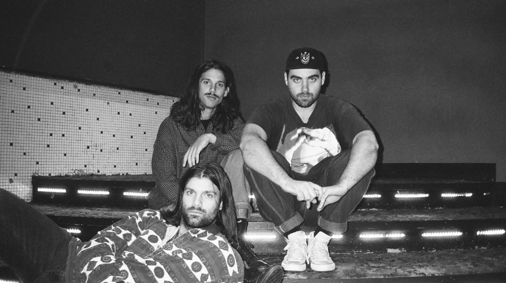

Turnover Merilis ‘Good Nature’ Album Terbaik Mereka Sejauh Ini
Album ketiga band dream emo asal Virgina Beach ini, menurut sang frontman Austin Getz “lebih hangat dan empuk.”
Album kedua Turnover, Peripheral Vision yang dirilis 2015 merubah nasib mereka. Band asal Virginia Beach ini (sekarang trio, setelah gitaris Eric Soucy mundur dari band tahun ini) memutuskan membuang sound punk ala Saves The Day—seperti di rilisan awal mereka—dan memainkan musik yang satu DNA dengan The Cure atau Wild Nothing. Lewat 11 lagu bernuansa dream rock dengan gitar twinkly, band ini bagaikan hidup kembali. "Semuanya berubah setelah album kedua dirilis. Sejak 2012, kami terus-terusan tur dan berhasil menarik banyak orang ke gig kami. Ini semua baru terjadi semenjak album kedua keluar," ungkap frontman Austin Getz yang kini berumur 25 tahun saat diwawancarai via telepon.
Getz melayani wawancara ini di sela-sela liburan, setelah sibuk mempromosikan album baru bandnya Good Nature. "Aneh melihat orang bereaksi terhadap materi baru, tapi itu juga bagian yang paling seru. Mereka mengatakan, 'Wah ini kayak Peripheral Vision tapi lebih hangat dan empuk.' Komentar ini ajaib karena ini persis sama kayak pikiran saya," ujarnya. Biarpun perubahannya tidak sedrastis Peripheral Vision dari album sebelumnya, Good Nature merupakan kemajuan dari arah musik baru yang mereka tempuh dua tahun lalu.
Band pop-punk emotive memasuki ranah musik dreamy yang lebih atmosferik bukan hal baru (tengok saja contoh lainnya: The Sidekicks atau Title Fight), setidaknya Good Nature menjadi bukti Turnover benar-benar meresapi sound baru mereka. Apabila lagu-lagu di Peripheral Vision bisa digambarkan sebagai "galau" dan "mengawang," lagu-lagu baru ini membawa sound baru mereka ke tingkat selanjutnya. Direkam selama enam minggu musim gugur 2016 bersama produser Will Yip, album baru Turnover melambangkan selera musik band ini yang meluas. Sepanjang wawancara, Getz menyebut sosok seperti George Harrison, album Pet Sounds, genre Bossa Nova, disko, dan Toro Y Moi cukup mempengaruhi proses penulisan lagu. Perhatian khusus mereka di album ini adalah aransemen musik. "Saya ingin album ini lebih dinamis dan bukan cuman nyomot bass ala-ala New Wave. Kami menulis bagian bass seperti bagian gitar," ujarnya.
Single pertama yang ceria "Sunshine Type" adalah bukti nyata perubahan tersebut. Dibuka oleh gitar jangly, trak yang diproduksi sangat rapi tersebut menunjukkan sisi soulful band emo ini. Getz mengatakan, "Salah satu hal yang disukai orang tentang Turnover, terutama di Peripheral Vision dan Good Nature, adalah permainan gitar yang menarik." Setiap riff ditulis dengan sangat hati-hati di dalam studio.
Perkembangan di dalam studio bukan hanya terjadi karena koleksi musik Getz yang bertambah luas. "Dalam periode antara dua album ini, hidup saya berubah banyak. Di awal umur 20'an, otak manusia mengalami proses format ulang terbesar dalam hidup seseorang," kata Getz. Selepas Peripheral Vision, jadwal tur band yang sangat sibuk mulai mempengaruhi Getz. Dia mengatakan, "Saya merasa teralineasi dari orang-orang terdekat. Setiap kali teman-teman saya di rumah sedang curhat, saya sadar kehidupan saya sudah jauh berbeda." Biarpun jarang di rumah, Getz berusaha mencurahkan waktu bagi hal-hal yang penting dalam hidupnya, atau sesuai kata-katanya, mencari "konteks yang lebih mendalam dalam hubungan sosial."

Pencarian ini membuat Good Nature album paling optimis Turnover sejauh ini. "Apabila Peripheral Vision adalah akhir dari masa remaja yang melahirkan banyak pertanyaan tentang kehidupan, Good Nature justru berusaha menjawab pertanyaan-pertanyaan tersebut," ujar Getz. Lagu paling menginspirasi di album, Curiousity berfungsi sebagai pernyataan sikap artistik mereka. Di atas seksi ritme yang ringan, Getz bernyanyi dalam suara lembut "We all have a little curiousity. We're so wide eyed. It gets hard to look at things from different perspectives. What you think is backwards could be inside out." Menemukan jawaban atas pertanyaan kehidupan merupakan tema utama album Good Nature. "Sulit untuk bisa menjadi puitis ketika anda berusaha menyampaikan sebuah pesan spesifik," ungkap Getz.
Kedewasaan dan ketenangan yang mengalir di Good Nature kadang membuat kita lupa betapa kasar dan jujurnya lirik yang dinyanyikan Getz sebelumnya dalam Peripheral Vision. Mulai dari anthem musim panas penuh nostalgia "Sunshine Type" hingga lagu penutup penuh cinta dan kedamaian "Bonnie (Rhythm & Melody)" potongan lirik "you and me being each other feels like it's all i ever needed," terasa sangat jauh dari "You're just another meaningless lover" yang pahit dari album Peripheral Vision. Getz menjelaskan, "Good Nature adalah jawaban terhadap Peripheral Vision karena mereka dibuat di tengah dua masa yang sangat berbeda dalam hidup."
Sesuai judulnya, Good Nature bisa juga kita maknai perubahan Getz yang makin sering menghabiskan waktu luang di alam bebas. "Saya kesulitan menjelaskannya. Ada sensasi berbeda menghabiskan waktu di hutan di California dalam tur pertama kami," ujarnya. Pengalaman yang mengubah hidup ini mendorong Getz pindah tempat tinggal ke Sebastopol, California, bersama pacarnya. Dia juga mulai menjadi pola makan vegan, menghabiskan lebih banyak waktu untuk membaca dan beraktivitas. Seiring tur promosi Good Nature semakin padat dalam waktu dekat, Getz kini lebih siap secara mental menghadapinya. "Kalau kamu biarkan dirimu terbawa oleh hidup tanpa melawan, biasanya kamu akan berakhir baik-baik saja," ujarnya sambil tertawa. "Saya sudah melakukan ini untuk beberapa saat dan hasilnya ok. Kita lihat nanti, apakah saya akan jatuh juga